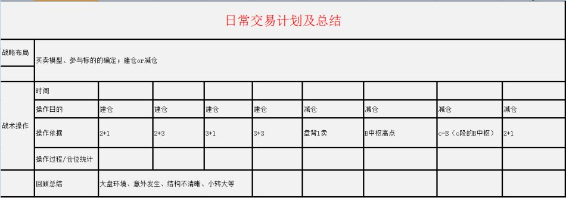

(2008-01-21 17:29:47)
本ID说过，要学本ID的理论，首先要洗心革面。
为什么？
因为你前面一切关于股票的知识，可能都是后面学习的毒药。
在本ID这里，只有严格分类后的不同操作类型，没有其他那么多无聊的不切边际的所谓预测。
一句话，来本ID这里学习，第一层次，就是要达到：当机立断。【韶山映山红】“一般人，总习惯于一种目的性思维，往往忽视了走势是当下构成中的，而本ID的理论判断，同样是建筑在当下构成的判断中，这是本ID理论又一个关键的特征。关于这种理论的当下性，在以后的课程中会重点介绍，按学历，这是初中的课程。”】
机会，是可以预先分析的，【韶山映山红】预先分析的是机会。机会就不是必然，做的是盈亏比。】
但这分析，不是预测，而是建立在完全分类基础上的边界分划，这分划完全来自本ID理论的纯数学构造，这构造的唯一性与精确性保证了这分类与边界的当下确认性。【韶山映山红】纯数学构造的系统参见102课。】
其实，这问题已经说过，但必须再次说，为什么？因为这是一种完全不同的思维方式，如果你不能明白，就永远与本ID的理论无缘。【韶山映山红】分析当下的状态，分类未来，然后去应对。而不是预测走势。】
例如，在现在，对以后的大盘走势，我们马上可以分析出所有必然出现的机会：【韶山映山红】小级别趋势下跌之后形成盘整，a+A+b盘整背驰，b有三卖。】
1、一个最小的机会，就是大盘线段下移后形成的线段类背驰，这里对应这两个目标，最好的是回拉上面的1分钟中枢从而形成5分钟中枢，剩下的就是形成第二个1分钟的下跌中枢。【韶山映山红】大盘线段下移，形成线段类下跌趋势，线段类趋势的背驰，必然带来线段反弹。 １，线段反弹不回当前中枢就会形成一个新的1分钟中枢，构成1分钟下跌趋势。 ２，线段反弹回到当前中枢，就会把当前中枢扩张升级形成5分钟中枢，这个5分钟盘整比1分钟趋势更容易形成筑底，所以说是最好的。 ３，当然，完全分类还有线段类趋势下跌的延伸，那样更糟糕。缠师没说，因为这里说的不是后续走势的完全分类，而是必然出现的机会的分类。线段类趋势下跌的延伸没有机会可言。】
2、第一个机会出现后，根据演化的当下选择，马上可以找到下一个必然出现的机会，就是如果是5分钟中枢，那么就有着一个中枢震荡的机会；如果是1分钟的第二中枢，那么就等着后面的底背驰或者这中枢扩展为5分钟后的震荡机会。【韶山映山红】现在的1分钟中枢扩张升级成5分钟中枢，就做这个震荡。形成新中枢和现在中枢形成下跌趋势，就等新的趋势背驰，或者新中枢的扩张升级。】
类似地，对任何走势，我们都可以根据理论，马上严格地给出必然出现的机会。市场就是这么贱，虽然折腾无数的人，但就是从来没有任何失误地按照本ID的理论去走，所以，本ID可以把市场叫为面首。
任何一个当下，你都可以根据本ID的理论马上给出后面必然要出现的机会。
上面说的是买点，卖点的情况是一样的。
好了，你根据理论，可以罗列出一大堆必然出现的机会。后面面临的，只是选择问题。例如，第1个机会，你会觉得级别太小，不想搞。那么不想搞就不想搞了，就像一个面首，你见了不想搞，难道还需要什么理由？【韶山映山红】按照操作级别选择是否参与。】
你真正明白了本ID的理论，操作其实就是这么简单，唯一需要问自己的，就是你现在有没有搞的兴趣，这个机会，这个面首，在这一刻，你想搞吗？
如果你想搞，那么，你就需要一系列的准备，通道的、资金的、一切的安排都要安排好，【韶山映山红】资金管理，仓位管理。】然后关键要把退出的边界条件也设置好。【韶山映山红】这里说的退出的边界条件，是成功之后的止盈退出条件，而不是背驰失败的止损退出条件。】
例如，对于第1个机会，【韶山映山红】大盘线段下移后形成线段类背驰，然后会有一个线段反弹。】设置的退出条件，就可以是原来的最后一个类中枢，【韶山映山红】线段类背驰反弹的最低要求就是只有一段反弹，回到原来的最后一个类中枢的低点。】或者是线段向上走势类型中的类背驰或类盘整背驰。【韶山映山红】线段向上走势类型中的类背驰是指反弹形成的线段类趋势上涨的背驰，线段向上走势类型中的类盘整背驰是指反弹形成的线段类盘整走势的三段线段盘整背驰。之前的走势是1分钟中枢的线段级别的离开，背驰之后的反弹也只能对应线段级别，所以退出条件就是线段级别反弹自身的结束。】
当然，根据这样的设置条件，在T+1条件下，你完全有可能走不出来，为什么？因为这买卖点可能就在当天完成了，买了卖不掉。所以，在设置时，可能还要参考机会出现的时间，如果在早上，可能要考虑一下。如果在下午，那就胆子可以大点。【韶山映山红】“需要一系列的准备，通道的、资金的、一切的安排都要安排好。”】
当然，这还和你自己实际的情况有关，例如一个中线走势极为良好的股票，如果一个线段下跌就去掉了20%，而你又在高位跑掉了，那这个回补机会当然就可以胆子大点。【韶山映山红】回补可以胆子大点：１，中线走势极为良好。２，高位跑掉了。３，一个线段下跌就去掉了20%，价差足够打短差的目标。】
更容易的，就是把级别放大点，如果你按周线操作，那么从2005年下半年买了到现在，你根本连一次都不需要操作，谁告诉你本ID的理论只做短线的？是孔男人告诉你的吧？【韶山映山红】如此说来，周线级别的操作不是投资股票，是投资国家。】
对于每种机会类型，都需要把各种可能的出现情况都考虑清楚，这样可以判断其力度，从而绝对进出的资金量。【韶山映山红】决定进出的资金量。资金管理。仓位管理。】
这就如同419，你今天想419了，但总要看到真正的货后，才能决定这投入的量。谁告诉你419就一定要奋不顾身的？419难道就不可以见了就撤？从见了就撤到奋不顾身，这里可以有无数的情况出现，当机立断，这就是唯一的。【韶山映山红】当机立断，机会面前，做不做，做到什么程度，以什么方式做，……】
学了本ID的理论，脑子里必须时刻有两个字：级别。如果连级别都搞不清楚，你还419？被419还差不多。
有了级别，就是节奏问题了，419，就是见好要收，而不是天长地久，这都不明白，就等着灾难连连吧。
不会卖出，就等于失去了下次买入的机会。
这个节奏之所以难，说白了，就是贪嗔痴疑慢作怪。
对于初学者，一定要机械地给点束缚，等于那死猴子带上个圈圈。这个束缚，就是5周、5日这些线，一旦分型后有效破了，一定走，这就是束缚。
当然，对熟练的，就不需要这些了，严格的走势分类自动就给出一切。
练习的第一步，很简单，就是在任何时刻点位，都能马上把后面根据理论把机会第一时间反应出来。
注意，任何的机会，必然在本ID理论的输出中。市场的机会与本ID理论的输出，是严格一一对应的。这就是本ID理论所以厉害的其中一面。
第二步，根据自己当下的心情、资金等等，选择介入的机会，放弃不想介入的机会。
然后就等待机的显现，当机立断，就这么简单。
但，这最后一步，足够你修炼N年了。
新茶
博主用心良苦，只有大跌过后人才会静下心来虚心学习，每次大跌后博主也必然有一篇重要的学习文章，学习去了！
2008-1-21 17:35
[匿名] 新浪网友
中央马上出台新的政策，已鼓励企业开创新兴产业，所以机构将大批回笼资金，股市将缓步下跌。由于房地产业被中央彻底打压，而由此引发的社会不良效应已经显现，大批的农民工闲散在大中城市中，而全民皆股致使全社会无产业底气，一味的参与金融炒作，经济泡沫实在太大，望各位股民听我良言，赶快撤出股市，到时造反也没人同情，还要抓你一个反革命现行！！！！！！！！！！！！！！！！！！
2008-1-21 17:48
[匿名] 股盲
多数人总喜欢预测，这也是没有办法的事情，１００００头牛都拉不回，好象非要预测才能活样的．．．．．．．．其实．．既然日常生活中不是每件事情都需要预测，凭什么炒股票就一定需要预测．
按缠论操作要预测也行！当可能性只剩下一种的时候不就是预测了吗？
所以那些用预测，吹嘘自己只说死话，只给定论的人才是骗人骗己的大大骗子．就算不是有心骗人也是在骗人．
所以我说：缠姑太老实了．太老实啦．偏偏多数人喜欢被骗．
2008-1-21 17:51
[匿名] 迷离
股盲整天说自己按照禅论有多好的收益，可否把学习体会说一下妈？很多缠迷会感谢你的，整天缠姑缠姑的叫，你不想替缠光大一下缠论吗？
2008-1-21 17:59
[匿名] 向日葵
缠姐好，
周末详读了博文，决定开盘卖出，虽是割肉，但避免了今天的更大损失。原因是周五已经看到了卖点，但心存幻想，不会卖。
用心领会;
‘不会卖出，就等于失去了下次买入的机会。这个节奏之所以难，说白了，就是贪嗔痴疑慢作怪。’
2008-1-21 18:03
[匿名] 股盲
我不想光大缠论，缠论也不需要我来光大．炒股只是小事一件，会不会都无关紧要的．我是这样想的．以前我在论坛也宣扬过缠论，不过我不想和人胡搅蛮缠．我就是因为威胁要把笨学生扔到楼下，被学校开除的．缠姑讲的这么清楚，更本不需要我等多事．很简单的很实际的很有趣的缠论，大家自己好好学，不要辜负了这份善愿．
2008-1-21 18:06
[匿名] 悟多
师傅好，你好歹回答一下问题啊。
如果说错了，就指正。
如果觉得不值得在正文中写一下，在评论中回复一下也可以啊。
不要这么不闻不问的样子好不？
2008-1-21 18:19
[匿名] 鱼儿
悟多 2008-01-21 18:19:32
师傅好，你好歹回答一下问题啊。
如果说错了，就指正。
如果觉得不值得在正文中写一下，在评论中回复一下也可以啊。
不要这么不闻不问的样子好不？
===========
如果老师没有回答问题有几种可能:1 她之前回答过了,只是你没有去看。2 她在文章里回答了，而你没认出来。
老师提前把可能出现的问题都列出来，在你问之前甚至你还不知道要问什么时。有时候一个问题从很多角度反复地说过了很多遍。
有一位这样好的老师在我们身边，如果还有什么问题的话，我们应该是回过头来问自己的时候了。
2008-1-21 18:48
[匿名] 影子
当你看到美女想419时,是马上拿钱出来干或者走人,但你不知道这美女在背后是否会有其它男人出来拿刀架着你,拿完你卡上的钱和剥掉你的衣服挂在地窖几天,或者你不肯说了密码,被人分尸.或者被叫家人送钱来,连家人一起被干掉,或者家里的女人被淫并卖到越南去.你只知道当下的干与不干,但你不知道你干的人是否背后对你419.
又或者你干得起色时,被引来警察,被告强奸,罚款并入狱五年,你一样被419.
所以你认为的当下,并不一定就应该当下.如果当下了,可能下一个死的就是你这样的人.
2008-1-21 20:16
[匿名] 新茶
今天大跌，苏红宇的观点很中肯！
~~我以为此波下跌除了前几天说的原因外，还有一个就是博弈的问题，机构与政府的博弈。
一、新股发行问题的博弈
新股发行，由于以前制度安排上的缺陷，导致利益分配上的不均，一直以来成为各路机构获得超额利润的最为重要的途径，他们有特权可以获得大量筹码，进而通过操纵二级市场就可以获得无风险的利润，这一制度上的缺陷肥了机构，榨取了中小投资者的血汗，社会一直就存有怨言。
近来，政府准备改革新股发行制度，首先要体现公平原则，有消息称要效仿香港市场实现按帐户均配，如果是这样，那么机构作为前发行制度的既得利益者，其稳定的收益必然会受到影响，这一对中小投资者为利好的消息恰恰成了对机构的最大利空消息。机构，作为一个强大的既得利益集团，他们怎么会束手就擒呢？他们必然会反抗，比如会给政府施加压力。一方面，他们会通过关系活动高层，另一方面，他们更要通过市场来获得话语权，迫使政府放弃或者改变、修订制度，从而获得他们利益上的最大化。
近期的下跌，就是机构要通过不断打压指数要挟政府做出政策调整，以使政府调整政策，这就是博弈。
二、融资问题的博弈
今天，中国平安公布消息准备再融资，融资规模将近1600亿元，创下融资规模新高，其对市场资金面的影响是不言而遇的，而更加重要的是，如果中国平安融资成功，那么会不会有更多的公司效仿纷纷扩大融资规模呢？这对目前资金面本来就紧张的中国股票市场来说无疑是雪上加霜，这绝对是各路主力不愿意看到的。如何解决？用脚投票。政府面对如此的下跌，会不会改变增发预期呢？这就是一个博弈的过程。
2008-1-21 21:17
[匿名] 新茶
谈到博弈，我们就不能不说5.30，5.30就是因为政府出台政策的突然性，导致机构大肆沽空市场，最后政府不得不调整策略，5.30的胜利也为机构敢于肆无忌惮再次挑战政府坚定了信心。
机构博弈，我们中小投资者却无辜的成为了炮灰，这是我们的不幸，但是在感慨的时候，我们也应该看清方向，寻找机会。
另外，我今天想谈谈基金在这次调整中所扮演的角色：
基金，凭什么赚钱？当然，基金经理作为专业的投资人，确实是有一定的理财能力的，但是，更加重要的是他们享受了许多超一般投资者的特权，比如新股发行制度。正是这一制度使然，他们才有了稳定获利的水平，如果剔除这些特权，他们的水平也高不到那里，比如海外基金的不断下跌就是明证。
这一次下跌中，基金冲当了急先锋，正是基金重仓股的持续、大幅下跌，才导致了大盘有如此幅度的下跌，那么他们为什么要参与这一次下跌呢？
第一、无论下跌多少，对于基金经理来说，都无所谓，因为钱不是他们的，他们的收益也与收益率没有任何的关系，不跌白不跌。
第二、参与对新股发行制度的博弈，如果成功就可继续获得收益，失败也没有什么损失。
第三、大盘平稳运行，无论是赎会还是买入，数量都比较小了，而大盘一但大幅波动起来，就会有大量的买进和卖出产生，这样就可以产生手续费，这样大盘一波动他们就平白增加了许多收入，何乐而不为呢？
第四、大幅波动对于经理们的老鼠仓来说，又是一次难得的机遇啊。
第五、增加交易量，佣金返还又是一笔不菲的收益啊。
说了这么多，大家最关心的，还是大盘明天会怎么样，未来会怎么样？
对于我来说，我仍然坚信，春天依然是明媚的，依然会是绚丽的，我们绝不能死在黎明前，我们所能做的惟有坚持了。明日，我坚信，我们会迎来阳光。
2008-1-21 21:18
[匿名] 影子
谁老用我的名说小缠啊,小缠该对我有意见了...
本来懒的上来了,不过有些话想提醒大家一下:
没有认真对待我心的提醒,损失严重.由于前几天说了几只股票,可能有同学进入,郑重提醒大家一下.其实年前就知道了准备金要提的事,所以已回避了任何银行地产股票,而且有人说这次要跌过前期低点.我当时也不太在意,现在看来,这种可能性变的越来越大...
所幸所点几只股票,119,753,目前应该还未亏损,725和雅戈尔表现好过平均水平,不过今天也开始加速.目前股票处于全面下跌状态,就算现在表现尚可的票,依然有可能补跌,希望持有的同学,明天在合适的机会,将仓位减至你能承受损失的范围之内,等大盘回升时再介入...
据我感觉,在反弹后,仍有可能继续下跌,比较悲观的的看法是仍有10几的空间,或许会见到4500,希望大家根据自己的承受能力和仓位,逢高减仓为宜...
2008-1-21 21:35
"练习的第一步，很简单，就是在任何时刻点位，都能马上把后面根据理论把机会第一时间反应出来。"
"然后就等待机的显现，当机立断，就这么简单。但，这最后一步，足够你修炼N年了。"
========================================
修炼ing......
今天的走势很经典.缠这篇文章真是及时雨,博主陪练的良苦用心,我等何能不倍加珍惜?!
今天的走势完全是可以根据理论"当下"判断的,只不过当机立断之时,还有个兵力部署的问题,这个其实也是很见功力的一件事.博主今天对这个也进行了详细的论述.
所谓"科学"即是正确的揭示事务的内在规律,"缠论"是有其科学的一面的,值得深入学习,研究,在实战中体会.提高.窃以为这个过程是蛮有乐趣的.入门了,颇有点挂帅用兵的感觉,哪怕指挥的只是自己那么一点小资金.
除了理论,缠的勤奋,真诚,博学.......也是值得我等敬重,学习的.不平凡的人总是有其不平凡的原因.缠智慧的背后,我看到更多的是超乎常人的勤奋和付出!
2008-1-21 21:54
[匿名] 飞刀
下跌没有走平就永远不是抄底的时候。所以还是谨慎吧！！
==========
心在焉，太好了！
上面这句话是我心的箴言啊，多谢。
我现在主要参考两个人的意见来做当下的决定，一个是WU2198，另一个是我心，她俩现在都是阶级姐妹，有爱心，直爽。
禅师，正反都说了，永远是对的，忽悠当预测，但现在市场越来越大了，未必任她翻云覆雨。
禅师是大鳄，不可能明确告诉大家哪天逃顶抄底之类，否则她自己怎么面包夹糖啊？！
所以，陪练只是陪练，大家有本事像WU2198和我心那样，自己飞去，没本事，长点心眼儿，别以为这里是面包房。
禅师给大家发了最后一根拐杖就是“级别+节奏”，剩下就靠自个儿的“当机立断”了！
我就是那个叫做“缠中戏婵”的，缠来禅去的，烦了，换个头盔，这行情，带把飞刀防身。
2008-1-21 22:10
回复未整理完
【网文】交易系统就是交易战争的核武器
(2015-07-17 16:42:21)
交易就是一场战争，这是和平年代男人唯一可以象战士一样厮杀的地方。
——我不也不晓得是谁说的
如果说交易是一场战争的话，那么交易系统就是战争中的武器，而以缠论搭建起来的交易系统，就是核武器。
每一次交易，都需要有详细的战略指导和战术执行。而这些都是建立在整体的交易系统之下的。在后面的时间里，我会持续为大家介绍我在交易系统方面的认识
在这篇文章中先简单的给个整体的框架
一、交易系统的搭建，第一个需要面对的问题就是对市场的认识。
客观。客观的看待市场，敬畏市场，不要主观臆测市场的走势
顺势而为，这个“势”是指市场合力，而市场合力的直接表现即价格的波动。
对止损的认识。止损是实战交易中的重要环节。这里损的不是账面的盈亏，损的是逻辑思维的错误，与盈亏无关。
二、交易系统搭建包含哪些部分？
战略布局：模型选择，级别选择，失败应对
战术执行：仓位控制，成本控制，意味应对
三、交易总结与完善
这是简单的一个开篇，后面会把每个部分详细的完善。
欢迎大家提出建议
【网文】交易总结小模型
(2015-07-24 19:36:48)
仅供参考，一个良好的交易计划及总结，对于长期生存在资本市场是一件不错的武器，欢迎大家装备
【网文】交易计划为谁而做（一）
2015-12-15
前言：一个交易员是逐渐成长的，这个过程是一个漫长又苦恼的过程，不断的希望与不断的失望交替出现，从一无所知的在市场里面横冲直闯，到不断地学习、不断的探索依然毫无起色，再到后面缠论的结识与交易系统的初步搭建，这个过程有太多的辛酸，金钱的亏损造成的痛苦与方向的迷茫，市场的迷失造成的痛苦对比，实在微不足道。本文将从三个方面来探讨交易计划的制定与实施，抛砖引玉。
交易学习成长的三个阶段
1 初生牛犊不怕虎
在还没有开证券账户之前，就对索罗斯、李佛摩尔、江恩等等知名投机大师的事迹非常熟悉，在每个夜深人静的时候，也曾幻想过自己今后会像他们一样在资本市场呼风唤雨。在没有开户前，我一直保持着这种高度的“自信”，直到踏入证券营业部，开完户之后（我当时开户的手续费竟然是千分之三！！！），市场像一台自动档的耳光机，啪啪啪的打着自己的脸。在对技术分析、基本面一无所知的情况下，我竟然认为凭借自己的眼光和感觉还有自己虚拟的“投机大师”的身份，能在这个市场上赚钱。一个月不到的时间，我就已经受不了账户的亏损了，也第一次认识到了自己的无知。
我们每个人接触这个市场的方式可能不同，有奔着财富来的，有奔着梦想来的，有奔着赌博娱乐来的，但是不管是那种，对市场的认知都处于一种最浅显的认识，对技术分析、基本面分析没有认真系统的学习过。其结果每个人都知道，被市场教育，交了学费还没有学到技术，只是有了一个认知：我要学习技术！
2 学习、实践、迷茫
度过第一阶段需要花的时间不是特别长，一次大的亏损或者市场大幅的向下波动都能够使人“顺利地”度过第一阶段，进入到学习阶段。而在这个阶段的度过需要花的时间就因人而异了。离开市场的，一直在缠绕里面出不来的，经历一轮牛熊的，经历几个月的潜心学习就度过的，因每个人的情况不同，所需时间不同。
在这个阶段中，我也花费了很大的力气和时间。
最开始学习是国外的经典投机大师的著作，比如《股票作手回忆录》《金融炼金术》《专业投机原理》等等。但是当时看完之后的第一感觉就是：大师，你没有告诉我哪里买哪里卖啊！你没有教我怎么预测市场啊！虽然你很出名，但是你写的书...（内心一片吐槽）。
后面就抛弃了国外的著作，开始看新华书店的热销书籍，例如什么抓黑马，擒庄等等各种畅销股票书籍。哇塞，这讲的好清晰啊，买卖点这么厉害，都是黑马股，圣经啊！然后就按图索骥，开始照葫芦买票，底部红三兵，早晨之星，双底，三重底等等，一买一个错，一买一个亏（当时是漫漫熊市）。哎，难道我不是投机大师的命？怎么会，肯定是我没有找到市场的“圣经”，某个技术没有学到。
然后开始了折腾西方统计指标的过程。最开始是均线，先是金叉和死叉，好简单，而且你看那些案例，赚钱简直不要太简单了。结果是呵呵。然后迷信10周均线和20日均线，上穿买入，下跌卖出，恩？还是蛮神奇的，试试吧——结果...下面就是KDJ、MACD等，金叉死叉，背离搞半天，不对，那改！改参数，改成什么样的呢？论坛上问问，求大神KDJ参数设置情况。辛辛苦苦折腾了那么久，交易依然是GG思密达！
然后就陷入迷茫，觉得“圣经”找不到了，哪里能找到交易的圣经呢？在这个过程中，交易依然还是做，完全是看天吃饭的节奏，学习的激情也降了下来，瞎的没事儿逛逛天涯，主要看的是“我的大学”、“天涯杂谈”这俩个板块，偶尔想起来了看看股市论坛，各种各样的神贴依然加着精华，可是再也没了那种点进去求大神指点的兴趣。
难道我的交易就这样止步了吗？
3 缠论与交易体系的搭建
缠论，也是在第二阶段学习中了解到的，在很长的一段时间内，对待缠论的学习也是按照之前传统的思维方式去学的，掌握了第一类们买卖点，抄底逃顶我也可以，掌握了第三类买点，市场不就是提款机了嘛，而且还是稳赚不亏、速度快。然后就实践，结果呢，想必大家也都有所体验的。拼命的找三买的股票，甚至想学公式设置，专门挑选三买的股票来做，然后下单交易，问题接着就来了，我所想象的是三买之后的股票都是大涨而且是快涨的啊，为什么我的涨的这么慢呢？有的甚至都下跌，亏钱啊！
在初学缠论的那段日子，我抱着学传统技术分析的思维来看待禅师所介绍的一买、二买、三买，认为找到这个神秘的买点，我就能在市场中赚钱，我去研究一买形成的结构，研究背驰的判断方法，可是结果和之前比，并没有有质的改变。
我认为我没有学好缠论，然后继续深入学习、研究，然后我发现了买卖点的转化、走势的生长变化等等一些以前没有注意到的知识点，这时，我才发现缠论不是介绍买卖点的某个指标，它是一个看待市场的思维方式啊！它是一个整体的交易体系啊！
走势必完美是核心，完全分类是指导思想，不测而测才是合理的“预测”，是制定交易计划，执行交易计划的思维方式，理想中的买卖点只是在这个过程中，自然展现出的某个价格，这不就是前辈一直讲的当下吗？
交易体系的搭建，自此扎根发芽。
（待续）
【网文】交易计划为谁而做（二）
(2015-12-16 18:21:59)
接上：走势必完美是核心，完全分类是指导思想，不测而测才是合理的“预测”，是制定交易计划，执行交易计划的思维方式，理想中的买卖点只是在这个过程中，自然展现出的某个价格，这不就是前辈一直讲的当下吗？
交易体系的搭建，自此扎根发芽。
交易体系的源头
这篇内容是禅师原文叫你炒股票108课中的第52课的内容，对我走出第二阶段起到了极大的帮助。缠论小学已经毕业，初中正在研究的缠友请认真多读几遍，请带着这俩个问题阅读下文：“市场波动的本质”，“交易计划制定的原则”。
教你炒股票52：炒股票就是真正的学佛
本ID一直强调无须预测，并不是说市场走势就绝对不可预测，相反，市场走势当然可以绝对预测。不过，这里的预测和一般所说的预测并不是同一意义，一般的预测是建立在一个机械的、上帝式思维基础上，这种思维，把市场当成一个绝对的、不受参与者观察所干扰的系统，由此而行为一套所谓的预测标准，一个建立在错误的思维基础上的标准。这种预测，本来就不存在。关于这点，如果你对量子力学的历史发展有点了解，不难理解。
市场的预测、观察、参与者，恰好又是市场走势的构成者，这就是市场预测的最基本起点。因此，市场的走势模式，归根结底就是市场预测、观察、参与者行为模式的同构，这意味着，唯一并绝对可以预测的，就是市场走势的基本形态。不学无术之辈，喜欢谈论所谓的点位，却不知道，点位只是基本形态演化的一个结果，是当下中形成了，形态是“不患”的，点位是“不患”之“患”，只要把握了这“不患”，其“患”自然就在当下的把握中。那种追求对点位的非当下把握，绝对是脑子进水，因为点位都是当下形成中的，这是一个“不患”，企图逃离这个“不患”而谋其“患”，不是脑子进水是什么？正因为点位都是在基本形态的演变中当下形成的“不患”，才有点位的“不患”之“患”。
明白了这个道理，才算是有了市场预测的“正眼”，无此“正眼”，都是瞎掰。而实际操作中，最基础的，就是对基本形态的最基本把握，这是“不患”的，只有立足于这“不患”上，才有对点位之“患”当下的把握。说白了，所有的操作练习，归根结底就是在此之上。所以，本ID说自己只是一个训练者，引导者，因为当下，只能是你的当下，离开你的操作当下，根本是不存在的。由此，不难理解另外一个操作上的“不患”，就是你事先确立的操作级别，这是“不患”的。市场，归根结底只是你的市场，就像，一个看花只能看到花的眼睛，那自然看花就是花，不会把花看成猴子，科学的把戏，就是要先假设所有的被科学定义为眼睛的物体，都只能把花看成花，所以科学在股市上注定死无葬身之地。
所有的市场，都必然只能是你当下观察、操作中的市场，离开你当下的观察、操作，市场对于你来说并不存在，或者说毫无意义。而你的观察、操作，必须有一个“不患”的前提，就是你的操作级别。这操作级别，就等于一个把花看成花或把花看成猴子的眼睛，在你的世界里，把花看成花与把花看成猴子所包含的基本模式是同构的，关键是这个模式，而不是花还是猴子的不同设定。所以，本ID的理论里，可以适用于任何操作级别的人，因为不同级别之间的基本模式是同构的，这就是市场的一个基本特征。注意，这特征不是理所当然的，这个特征之所以存在，归根结底，就是市场参与者有着基本相同的结构，这结构，归根结底，就是贪嗔痴疑慢。甚至可以这样说，在六道轮回中，任何的类市场形态，本ID的理论都适用其中，因为，这贪嗔痴疑慢是同构的。所以，如果本ID这理论的种子种下后，就算你轮回到其它道上，那里恰好有一个股票市场，你也可以在其中如鱼得水。
那么，市场的基本形态是什么，最基础的，就是反复说的以中枢、级别为基础的趋势与盘整。而背驰的级别一定不小于转折的级别，是市场预测的最基础手段。例如，你是一个30分钟级别的操作者，那么，任何30分钟级别下跌及30分钟级别以上的盘整，你都没必要参与。因此，当一个30分钟的顶背驰出现后，你当然就要绝对退出，为什么？因为这个退出是在一个绝对的预测基础上的，就是后面必然是一个30分钟级别下跌或扩展成30分钟级别以上的盘整，这就是最有用、最绝对的预测，这才是真正的预测，这是被本ID的理论绝对保证的，或者说这是被市场参与者的贪嗔痴疑慢所绝对保证的。
本ID的理论，归根结底，就是研究这贪嗔痴疑慢的。由此也就知道，为什么市场的操作，归根结底就是人自身的比较，为什么本ID可以把理论大肆公开而不会影响本ID自己的操作，因为，只要这世界依然有这贪嗔痴疑慢，本ID就如鱼得水。有人整天痴谈学佛，其实，炒股票就是真正的学佛，不在这贪嗔痴疑慢的大烦恼中如鱼得水、得大自在，你那佛，顶屁用！
未完待续
【网文】交易计划为谁而做（三） 禅师为中小资金设计的买卖模型
(2015-12-17 17:30:57)
通过对禅师108课中的第52课《炒股票就是真正的学佛》的学习，我解决了一个最重要的问题：放弃机械的、上帝式的思维，真正认识到市场波动的本质与不确定性。那么我需要做的就是建立一套观察、跟踪、认识市场的属于自己的思维方式。
一，走势必完美
“缠中说禅技术分析基本原理一”：任何级别的任何走势类型终要完成。
“走势终完美”这句话有两个不可分割的方面：任何走势，无论是趋势还是盘整，在图形上最终都要完成。另一方面，一旦某种类型的走势完成以后，就会转化为其他类型的走势，这就是“不患”而有其位次。在技术分析里，不同的位次构成不同的走势类型，各种位次以无位次而位次。而如何在不同位次之间的灵活运动，是实际操作中最困难的部分，也是技术分析最核心的问题之一。
上面这俩段是禅师原文中对“走势终完美”的解释，在这里，我需要做的事情是：
1，寻找适合自己的操作级别。你事先确立的操作级别，这是“不患”的。市场，归根结底只是你的市场，就像，一个看花只能看到花的眼睛，那自然看花就是花，不会把花看成猴子。
2，对市场走势的分类。市场的走势模式，归根结底就是市场预测、观察、参与者行为模式的同构，这意味着，唯一并绝对可以预测的，就是市场走势的基本形态。
市场的基本形态是什么，最基础的，就是反复说的以中枢、级别为基础的趋势与盘整。其中趋势又分为上涨和下跌。
二、完全分类
“缠中说禅走势分解定理一”：任何级别的任何走势，都可以分解成同级别“盘整”、“下跌”与“上涨”三种走势类型的连接。
注意，下面的讨论，如没有特别声明，都是在同级别的层面上展开的，只有把同级别的事情弄明白了，才可以把不同级别走势组合在一切研究，这是后面的事情了。
上涨、下跌、盘整三种基本走势，有六种组合可能代表着三类不同的走势：
陷阱式：上涨+下跌；下跌+上涨。
反转式：上涨+盘整+下跌；下跌+盘整+上涨。
中继式：上涨+盘整+上涨；下跌+盘整+下跌。
三、中小资金买卖模型的介绍
市场的走势，都可能通过这三类走势得以分解和研究。站在多头的角度，首先要考虑的是买入，因此，上面六种最基本走势中，有买入价值的是：下跌+上涨、下跌+盘整+上涨、上涨+盘整+上涨三种。没有买入价值的是：上涨+下跌；上涨+盘整+下跌；下跌+盘整+下跌。由此不难发现，如果在一个下跌走势中买入，其后只会遇到一种没买入价值的走势，就是下跌+盘整+下跌，这比在上涨时买入要少一种情况。而在下跌时买入，唯一需要躲避的风险有两个：一、该段跌势未尽；二、该段跌势虽尽，但盘整后出现下一轮跌势。
根据上面的分析，可以马上设计一种行之有效的买卖入方法：在第一类买点买入后，一旦出现盘整走势，无论后面如何，都马上退出。这种买卖方法的实质，就是在六种最基本的走势中，只参与唯一的一种：下跌+上涨。对于资金量不大的，这是最有效的一种买卖方法。
下面重点分析：
对于下跌+上涨来说，连接下跌前面的可能走势只会有两种：上涨和盘整。如果是上涨+下跌+上涨，那意味着这种走势在上一级别的图形中是一个盘整，因此这种走势可以归纳在盘整的操作中，这在以后对盘整的专门分析里研究。换言之，对于只操作“下跌+上涨”买卖的，“上涨+下跌+上涨”走势不考虑，也就是说，当你希望用“下跌+上涨”买卖方法介入一只出现第一类买点的股票，如果其前面的走势是“上涨+下跌”，则不考虑。注意，不考虑不意味着这种情况没有赢利可能，而只是这种情况可以归到盘整类型的操作中，但“下跌+上涨”买卖方法是拒绝参与盘整的。如此一来，按该种方法，可选择的股票又少了，只剩下这样一种情况，就是“盘整+下跌+上涨”。
从上面的分析可以很清楚地看到，对于“下跌+上涨”买卖方法方法来说，必须是这样一种情况：就是一个前面是“盘整+下跌”型的走势后出现第一类买点。显然，这个下跌是跌破前面盘整的，否则就不会构成“盘整+下跌”型，只会仍是盘整。那么在该盘整前的走势，也只有两种：上涨、下跌。对于“上涨+盘整+下跌”的，也实质上构成高一级别的盘整，因此对于“下跌+上涨”买卖方法方法来说也不能参与这种情况，因此也就是只剩下这样一种情况：“下跌+盘整+下跌”。
综上所述，对于“下跌+上涨”买卖方法方法来说，对股票的选择就只有一种情况，就是：出现第一类买点且之前走势是“下跌+盘整+下跌”类型。因此这里就得到了用“下跌+上涨”买卖方法方法选择买入品种的标准程序：一、首先只选择出现“下跌+盘整+下跌”走势的。二、在该走势的第二段下跌出现第一类买点时介入。三、介入后，一旦出现盘整走势，坚决退出。注意，这个退出肯定不会亏钱的，因为可以利用低一级别的第一类卖点退出，是肯定要赢利的。但为什么要退出，因为它不符合“下跌+上涨”买卖不参与盘整的标准，盘整的坏处是浪费时间，而且盘整后存在一半的可能是下跌，对于中小资金来说，根本没必要参与。一定要记住，操作一定要按标准来，这样才是最有效率的。如果买入后不出现盘整，那就要彻底恭喜你了，因为这股票将至少回升到“下跌+盘整+下跌”的盘整区域，如果在日线或周线上出现这种走势，进而发展成为大黑马的可能是相当大的。
备注：
本来在这块想和大家分享我个人的交易模型的，但在我写了一半时想起禅师原文中曾介绍过中小资金的买卖模型的文章，自然选择禅师介绍的模型了。
在上面的文字中，有一个非常重要的前提就是同级别角度及不参与调整的思路，这个需要大家在阅读时注意这个前提。
另外上面的模型中，没有介绍到资金管理与模型搭配的问题，这个需要大家注意一下。
最有价值的不是禅师介绍给我们的模型，而是禅师思考问题的方式。
未完，待续
(2015-12-22 17:26:21)
前言：每个人的交易系统在细节上是有区别的，但是在系统的设计、关注点、逻辑上不会有特别大的分歧，下面介绍的不是具体的某个交易系统，而是一个交易系统在设计上应该包含的逻辑点，欢迎大家提出意见或者补充完善。
一、整体规划
1，资金方面：
a，资金类型：个人资金、朋友资金、配资资金等；
b，资金期限：短、中、长；有无回款压力，生活压力等
c，仓位管理：全仓，分仓，分账户等；
2，期望值：
a，资产配置保值型
b，资产配置增值型
c，家庭资产重要来源
d，职业型
3，风控方面
a，参与标的
b，止损逻辑
c，极端情况
d，个人意外
二、策略选择
1，技术面、基本面、比价关系三者在决策中各自的分工与权重。
2，级别的选择：
a，操作级别的确定
b，级别模式：同级别分解、多级别联立
3，买卖模型的确定：
根据市场的环境及个股的走势，确定当下适合的操作模型。
入场机制
退出机制
4，降成本、降仓位的选择
根据战略的要求，在战术执行上的俩种选择，可以参考前面文章
《缠论交易之战略战术思考》
5，意外情况
停牌，突发重大事件、个人原因（比如断电断网）
三、仓位管理
1，标的选取：
a，流动性考量，b，波动性统计（股性），c，标的数量
2，仓位配比
a，不同标的的仓位
b，不同类型买点的仓位
c，不同级别的仓位
注：止损问题
虽然禅师原文中并没有提到止损的问题，但是止损问题还是需要格外强调一下的。
对于止损的认识，普遍的看法是设定某一止损线，都亏损达到这个标准，就要机械止损。
关于止损，机械的设置一个标准是人们熟悉的方法之一。
另外一个就是止损不仅仅指账户的亏损，而是指逻辑上的错误。我们的每一次操作都是建立在一定的逻辑和依据之上的，当我们发现之前的逻辑和依据出现问题时，我个人认为是应该把前面的操作“损掉”，无论这笔操作的盈亏。
以上仅供参考，欢迎指正或补充。
未完待续
【网文】交易计划为谁而做——我的交易体系
(2015-12-23 18:19:17)
前言：
下面分享的是我目前正在使用的交易体系，于我个人来讲，是建立在对自我习惯、个性了解的基础上建立的，仅供大家参考，切勿生搬硬套。因为我个人股票和期货都有在做，而且因为俩则的交易规则方面的不同，所以在处理上也是俩套。股票更多是中长期的操作，期货则是日内波段或抢帽子的技法。
一、整体规划
1，资金属性：自有资金，无任何负担，偶尔加朋友账户指导，但不负责（机智如我）。
2，期望值：不增值不保值，不构成目前收入的主要来源，更多的是为后面的职业积累经验，做准备的目的。
3，风控方面：
参与标的：流动性要充足，波动性适中，业绩明朗，白马股或者新兴行业
止损逻辑：买点被破坏，消息面逻辑没有得到验证
极端情况：大盘风险或者行业风险，退出
个人意外：期货日内操作必须平仓，股票仓位不受影响
二、股票方面
1，基本面研究建立股票池，技术面研究确定价格及仓位，比价关系确定时机和节奏。
股票池方向：中小市值；新能源汽车产业链；高端装备制造；互联网+；大健康（新补进）；题材概念股票一旦都是手痒做短线几夜情的关系。
技术面：在不同的时间段，市场会有某级别的参与模型出来，这个是根据缠论与市场环境的结合确定的，非死板的。做中长线的投资者，每个周末的技术研究之一就是对市场上代表性的股票，在结构方面的量变和质变做一个统计。
比价关系：a,行业对比 券商、银行地产、周期行业，防御端，创业板。b，题材之前的对比 根据市场题材活跃度拟定（有很多题材都是死翘翘型的）。C，权重的研究
2，操作级别的确定：30F笔中枢或者线段中枢产生的买点，多级别联立体系。
3，买卖模型的确定：
下跌+上涨；下跌+盘整+上涨；上涨+盘整+上涨（这三个可参与模型都要，30F级别的买点，一年也没几次。）
入场机制：1买关注，2买动手，3买进攻。（一般建仓保持2+1,3+1等模式）
退出机制：趋势继续做，盘整需退出。见B开始减仓，1卖减，2卖大减，3卖之前仓位将至2成之下。
4，低位中阴降成本，高位中阴降仓位。
5，附表：交易计划、交易记录及总结

补充一点：你一定要清楚自己要什么，不要什么！
三、期货日内波段或抢帽子
1，标的选取：成交量较大，交投活跃，波动性适中。近期无极端结构，高一级别趋势清晰，盘整不要！基本面看看新闻就好了，比价关系在期货中的应用更加简单，都是分着派别的。
2，操作级别：五分钟的一笔或一分钟的一笔（要说走势类型的话可能是分时级别）
3，多空方向的选择：30F走势的方向即为小级别做单的方向。
4，介入退出机制：方向选定后，介入模型为操作级别的顶底分型成立之时。退出机制：a，介入后顶底分型被破坏，不能延续成笔的转折。b，下次的顶底分型。
5，期望空间和利润，只是五分钟一笔的中间部位。
6，抢帽子也有的叫刷单，曾经还是一职业。主要操作的是一分钟甚至秒级别的走势，大部分是利用盘感，在成交量明显放大，交投十分活跃时快速交易。交易时间短，盈利小。
注：在这个交易计划的制定中，主要是研究大级别方向的确定，还有对结构位置的划分，另外，对于处于大级别背驰段的行情，小级别上不参与该方向的操作，反而要考虑转折方向的仓位。
以上为本人操作使用，适合我个人的习惯、性格及对市场的理解。仅供大家参考，切勿照搬照抄。
后面还有一部分是关于执行力的相关内容
未完待续
【网文】交易计划为谁而做——结尾
(2015-12-24 18:22:03)
一、繁华是他人的，寂寞是自己的
俗语讲，种瓜得瓜，种豆得豆，市场虽然不是简单的因为...所以...的逻辑关系，但是我们的操作肯定是建立在一定的逻辑基础上的，你的逻辑就会给你带来相应的收益，也会带来相应的风险。这也是盈亏同源的一种理解。
经过前面的交易系统的设计，也才是完成了第一步，下面自然就是熟悉和实践的过程，这是交易的另外一个关键环节，在这个环节中，有几下几点分享给大家一起思考
1，盈利能力
抓板，翻倍还是火箭发射？自己的体系，自己一定要清楚它的盈利能力情况，什么样的利润是你要做的，什么样的收益你只是看客，曾经幻想把市场的每一个波动都抓住，梦醒来，才知道这是多么可笑的想法。
2，退出机制带来损失能否接受
一个是直接的账面上的损失，一个是丢掉的机会成本（俩个股票中，选择了A，结果却走失败，B走势却符合预期）。对于第一点，接受起来还不是特别难，在股市中，很多人心急或者心态不稳，归结在对机会成本的懊恼：少赚比亏钱还难受，踏空比套牢难受。自己对亏损和机会成本的清晰认识和欣然接受，是一个成熟交易者必须跨过的一道坎。
3，股市从来只有一个字——“干”。
有了一套交易体系，并不意味着高枕无忧，也并不意味着亏损不会再来，也并不意味着市场的财富源源不断的流进你的账户。实践、验证、完善，执行这是需要用一单一单的钱堆出来的。借用校长的话：神枪手是练出来的。
二、执行力
做交易就是在交易你自己，放弃你自己的交易系统就是放弃你自己。生活中我们会懒惰，工作中我们会偷懒，社交中可能流于肤浅，也许某些坏习惯不会直接给生活带来负面效应，但是在交易场中，我们的任何习惯都会得到市场的直接奖赏或者惩罚。
如果真要讨论什么执行力训练的话，我只想问：生活中，你练习过不闯红灯吗，练习过不摸电门吗？显然没有。
对于刚出锅的红烧茄子，我除了第一次直接放到嘴巴里面，后面没有一次敢直接动筷子吃！
执行力差，是认知的不到位。
道理我都懂，但是我做不到。
1，职业化。a，很多人参与股市，都是业余的，很多甚至是被人“坑蒙拐骗”进来的，本身不是职业，也不是当成一门生意来做。b，没天赋，性格不适合股市。术业有专攻，每个人的擅长本来就有区别。
2，没有稳定的交易体系。这里的稳定，不只是指稳定的获利，也指你稳定的使用，不会朝三暮四，随波逐流。
3，自身性格与交易体系的搭配。慢性子就别想着每天抓板，急性子就想什么长期投资。什么是真正好的交易系统，那就是你用起来得心应手的系统，别人的再好，都是别人的！
三、风控决定生存。
重要的事情说一遍
走势必完美：本级别学习阶段的终结，转化为同级别的实践阶段；站在更大级别的角度去看，又处在高级别的学习或实践中。
（完）
(2008-01-22 15:12:04)
看今天的帖子之前，如果没有看过下面的帖子的，请先看看“2008年行情展望2007-12-20 15:59:05”
大盘的走势，和昨天晚上课程说的是一致的，就是等待第一个机会，线段下跌的类背驰，显然，在今天早上的反弹后，第二个类中枢已经形成，所以，这个第一个小机会已经在即，这构成短线的一个反弹。
【韶山映山红】为什么这里还说“小机会已经在即”？不是已经出现了买点吗？当下是如何做判断的？以后研究★事实上，后一天确实又创新低了。1，已经不是前一个中枢直接扩展的走势，这里势必出现一个新的1分钟中枢。除非有什么特殊情况的小转大，次日不会一线段直接拉上去，即使不再新低，至少也应该在形成中枢之后，有个离开段来完成中枢，离开段的终点才是走势的转折点。2，MACD没有拉回0轴。】
这反弹，将至少构造一个1分钟中枢，由于在5100上下已经有1中枢，【韶山映山红】1分钟中枢的ZD的5是5100点。】因此这构成1分钟下跌的第二中枢的可能性极大，除非能线段式地一下重回5100点，否则，只有这种情况。【韶山映山红】如果直接以“线段式”拉回1分钟中枢，就扩张升级，或者V型反转。不回原中枢就形成新的1分钟中枢，构成1分钟的趋势下跌。】
1分钟中枢后，就是扩展为5分钟或出现1分钟下跌背驰两种情况，【韶山映山红】形成新的1分钟中枢后，对这个新中枢而言，还是盘整扩展升级或趋势延伸两种情况。】
而这次反弹，在最坏的情况下，构成对4778点跌破的回抽，然后再次探底，【韶山映山红】4778点是6124以来，前面的最低点。当下的线段类盘整背驰将形成的1分钟中枢是个回升中枢，其本身就是对4778点的回抽。】
因此，能否重新站住4778点，这是短线最关键的问题。【韶山映山红】这一天创新低了，虽然10-11对8-9线段类盘整背驰，但1分钟中枢3-6的离开段对进入段不背驰，暂时失去了反抽回中枢的可能，只看反抽形成新的1分钟中枢9-12以后，是止跌站稳，还是继续下探，所以“能否重新站住4778点，这是短线最关键的问题。”。】
上面这机会的把握，就看你的技术了，没这技术，继续等到日的底分型确认才介入，这样，风险比较小。【韶山映山红】看1分钟图只知道下跌，没有多少感觉。看日线图，两根绿油油的打狗棒，好吓人的说。】
注意，这次的回跌，有着很多股票之内之外的因素，站在长远的角度，这样一次走势，是必须的。【韶山映山红】“受周边股市集体暴跌影响，沪深两市继续大幅杀跌，上证综指和深证成指均创史上最长的阴线，下跌点数分别高达354.69点和1215.08点。同时，沪深两市近千只个股封于跌停，翻红个股仅24只，表明恐慌情绪在市场蔓延。”】
就算最简单的情况，印花税如果还是现在的，谁都没法混。【韶山映山红】查股票交易印花税历史，2005年1月24日下调为1‰。2007年5月30日上调为3‰。缠师本文后三个月，2008年4月24日下调为1‰。2008年9月19日起，由双边征收改为单边征收，税率保持1‰，至今。】
此外，那些所谓的大家伙，随便就狮子大开口，这样的情况不警戒一下，以后谁都没法混。【韶山映山红】网文摘录：A股市场最大笔再融资项目亮相中国平安。 在A股上市近一年后，中国平安再次开启融资“阀门”，拟公开增发不超过12亿股，同时拟发行分离交易可转债不超过412亿元。若中国平安上述再融资方案最终实施，将成为A股市场最大笔再融资项目。据wind统计数据显示，目前已经实施的再融资项目最大笔金额为海通证券的260亿，尚未实施的项目中最大笔是中国石化300亿分离交易可转债，但这些与中国平安的再融资规模来比均可谓“小巫见大巫”。 以上周五的收盘价测算，中国平安公开增发募集资金额将达到约1178亿元，再加上412亿分离债募资额度，其再融资规模将接近1600亿元。】
市场的游戏规则的维持，有时候是很残酷的，这点没什么可说的。
注意了，今年是井的年份，井可以是上面的，也可以是下面的，今年，只有心态加技术才能够成功。【韶山映山红】看空一整年啊。下面是实际的全年一览。】
心态好的，坐一次电梯，那这次电梯后，最好也顺便把技术提高一下；至于心态不好的，那就上面落井，下面再落井，本ID的青蛙粥原料充足了。
当青蛙还是猎手，自己瞧着办吧。
先下，再见。
教你炒股票94：当机立断【网文】交易系统就是交易战争的核武器【网文】交易总结小模型【网文】交易计划为谁而做（一）【网文】交易计划为谁而做（二）【网文】交易计划为谁而做（三） 禅师为中小资金设计的买卖模型【网文】交易计划为谁而做（四）交易系统的设计【网文】交易计划为谁而做——我的交易体系【网文】交易计划为谁而做——结尾超短线反弹在即